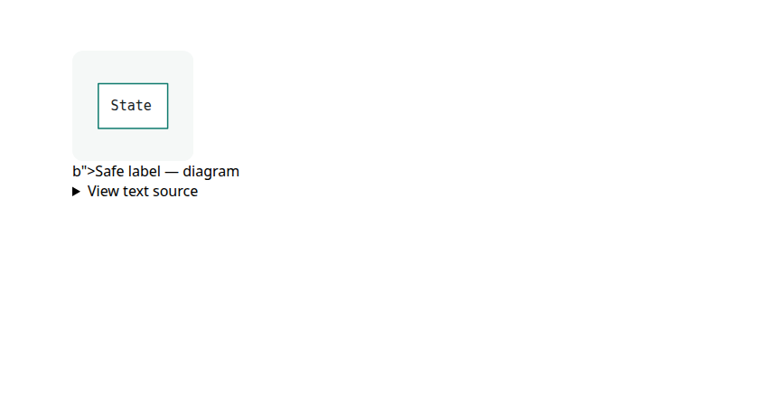
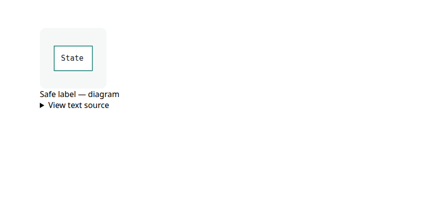

Async toolkit and immutable records
Added framework-neutral async state and validated immutable records on the existing Runtime. Production and testing exports are separate.
Added framework-neutral async state and validated immutable records on the existing Runtime. Production and testing exports are separate.
Prevented superseded async work from publishing state or feedback under a newer operation.
Added fixed-entry compilation and output rollback. Immutable save capture and keyed-row completion updates avoid redundant document work.
Certified a JSON field while importing it, then adopted that exact root. The normal copying replace API keeps its existing behavior.
Preserved ordinary API names in generated docs and fixed quoted attributes leaking into diagram captions.
Diagram caption rendering, captured for #810. The same fixture now displays the label without leaking attribute text.

b"> appears in the caption.

Original browser captures from 14 October, retained with #810.
Documentation browser tests · Runtime, types and build checks. Source and test details for compilation and import are attached to #832 and #834.